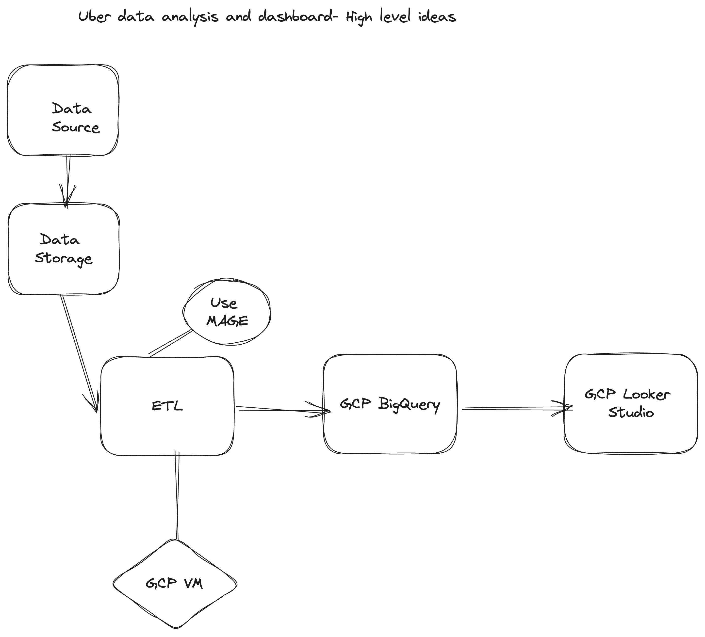

link
Credit
The dataset is downloaded from DATABASEURL
The reduced version used in this project is upladed as API form DATAURL
Skill invlove
Python MAGE Data engineering Googld Cloud Platform
Description
This is a end to end project using a sample data taken from the NYC TLC Trip report invovle using python for initial clearning, using MAGE for construct data pipeline and data visulization using looker studio.
High level flow

Key Takeaways
- Hands on experience in data engineering.
- Utilized Python for data cleaning and transformation tasks, ensuring data quality and integrity.
- Enhanced understanding of SQL querying and database management, specifically working with GCP’s BigQuery.
- Developed in presenting data and insights through interactive dashboards using Looker Studio.(Further improvement require)